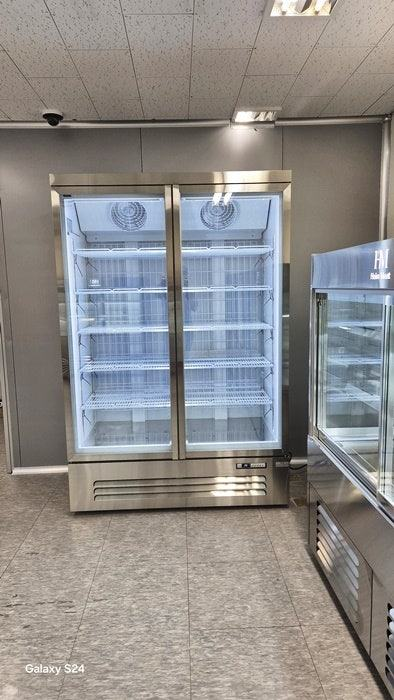
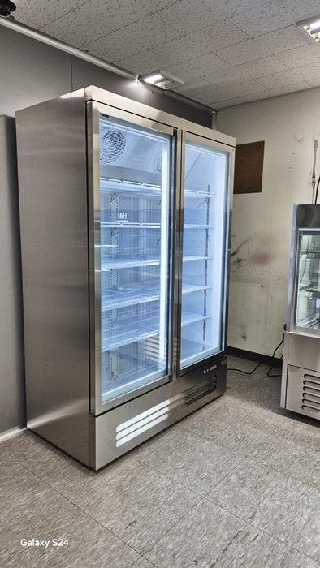
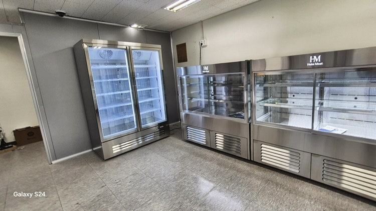
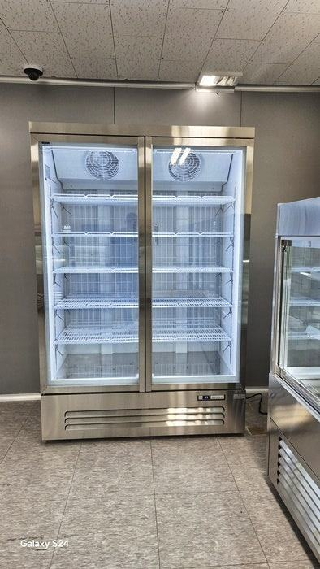
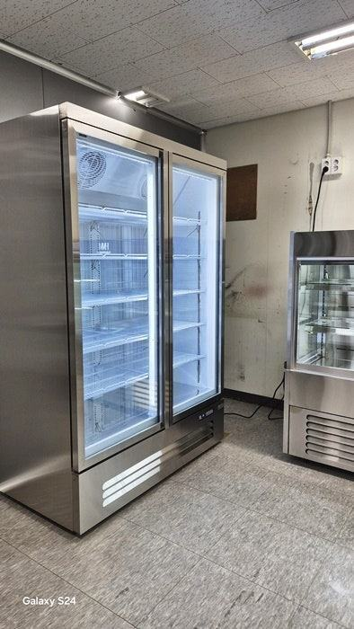
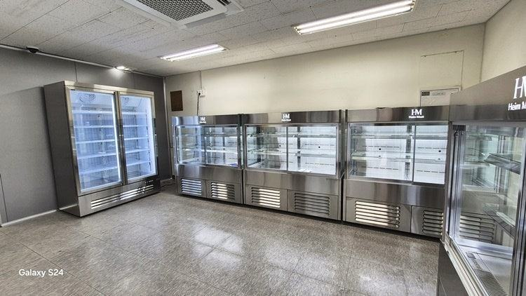
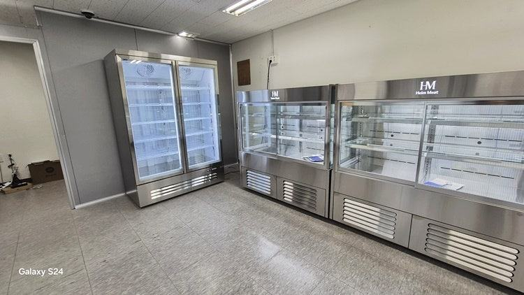
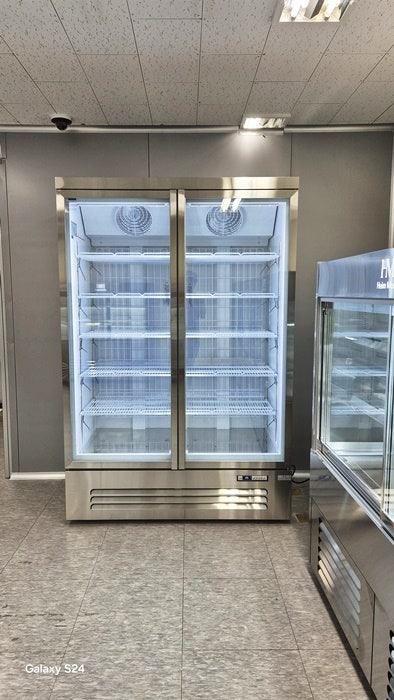
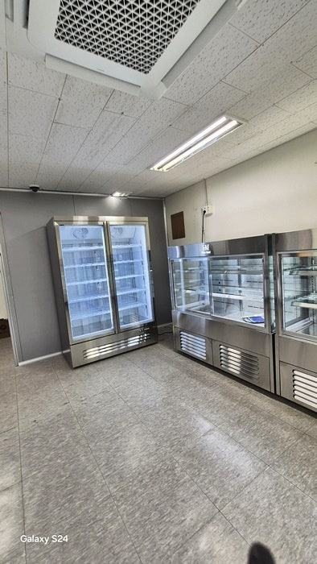
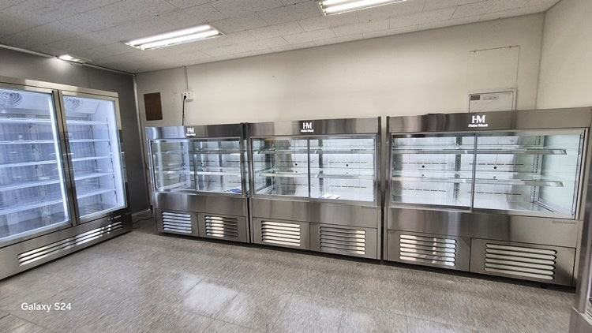

반찬(진열)쇼케이스
반찬쇼케이스 전기세, 반찬가게 운영 습관에서 새는 곳

반찬쇼케이스 전기세는 기계 자체보다 뜨거운 반찬을 바로 넣는 습관, 벽에 붙인 설치, 먼지 쌓인 응축기, 꽉 채운 진열에서 많이 새어 나갑니다. 이 네 가지를 먼저 고치고, 그래도 부담이 크다면 단열과 콤프레셔 상태를 점검받아 보세요.
안녕하세요. 반찬가게 냉장 진열장을 매장에 맞춰 제작하는 한성쇼케이스입니다.
반찬가게는 진열장이 하루 종일 쉬지 않습니다. 아침에 반찬을 채우고, 점심과 저녁 퇴근 시간에 손님이 몰리고, 마감 후에도 남은 반찬을 지키느라 밤새 돌아가죠.
그러다 보니 여름 고지서를 받고 "진열장 때문인가요?" 하고 문의하시는 사장님이 많습니다.
현장에 가 보면 진열장이 문제라기보다 쓰는 방식에서 전기가 새는 경우가 훨씬 많습니다. 반찬가게 특유의 작업 흐름이 진열장에 부담을 주는 지점이 있습니다.
오늘은 반찬쇼케이스 전기세가 어디서 늘어나는지, 반찬가게 하루 흐름을 따라가며 점검할 부분을 정리해 드리겠습니다.
1. 아침 진열: 식히지 않은 반찬
반찬가게 전기세를 끌어올리는 가장 흔한 원인은 막 만든 반찬을 그대로 진열장에 넣는 것입니다. 김이 나는 볶음이나 조림 용기가 들어가면 진열장은 그 열을 다 빼낼 때까지 콤프레셔를 쉬지 않고 돌립니다.
주변 반찬 온도까지 함께 올라가 위생에도 좋지 않습니다.
조리실에서 한 김 식힌 뒤 진열하는 순서만 지켜도 아침 시간대 진열장 부담이 크게 줄어듭니다. 식힐 공간이 부족하다면 선반 하나를 식힘 전용으로 정해 두세요.
- 조리 직후 반찬은 식힌 뒤 진열하세요.
- 식힘 전용 선반이나 작업대를 정해 두세요.
2. 설치 자리와 주방 열기
반찬가게는 진열장 바로 뒤가 조리 공간인 경우가 많습니다. 가스레인지나 튀김기 열기가 진열장 기계실 쪽으로 가거나, 진열장 뒷면을 벽에 바짝 붙여 두면 열이 빠지지 못해 기계가 평소보다 훨씬 많이 일합니다.
뒷면과 옆면에 통풍 여유를 두고, 열원과 진열장 사이에 거리를 확보해 주세요. 햇빛이 바로 드는 통유리 앞도 피하는 편이 좋습니다.
이미 설치된 진열장을 옮기기 어렵다면 열원 쪽에 가림판을 세우는 것만으로도 도움이 됩니다.


3. 영업 중: 꽉 채운 진열과 열린 문
반찬 종류를 많이 보여 주고 싶어 용기를 빈틈없이 채우면 냉기가 돌 길이 막힙니다. 안쪽은 차갑고 앞쪽은 미지근해지니 설정 온도를 더 낮추게 되고, 그만큼 전기를 더 씁니다.
용기 사이에 바람이 지나갈 틈을 남기고 내부를 적당히 비워 두세요.
앞문형 진열장이라면 손님 응대 중 문을 열어 둔 채 포장하는 습관도 점검해 보세요. 필요한 반찬을 꺼낸 뒤 바로 닫고 포장대로 옮기는 동선이 냉기를 지킵니다.
- 용기 사이에 바람길을 남기세요.
- 포장은 문을 닫은 뒤 포장대에서 하세요.
4. 마감 후: 응축기와 패킹 관리
기계실 응축기에 먼지와 기름때가 쌓이면 냉각 효율이 떨어져 전기를 더 씁니다. 반찬가게는 조리 기름이 공기 중에 떠다니다 응축기에 들러붙기 쉬우니 정기적으로 전원을 끄고 청소해 주세요.
문 고무 패킹에 양념이 굳으면 문이 꼭 닫히지 않아 밤새 냉기가 샙니다. 마감 때 패킹을 닦고, 갈라진 곳이 있으면 교체를 요청하세요.
내부에 성에가 두껍게 끼었다면 제거해 주시는 것도 잊지 마세요.
체크리스트
- 조리 직후 반찬 식힌 뒤 진열
- 뒷면 통풍과 조리 열원과의 거리
- 용기 간격과 내부 적재량
- 응축기 기름때·먼지 정기 청소
- 문 패킹 양념 청소와 성에 제거
현장에서 자주 보는 경우: 벽에 붙이고 강으로만 쓰는 냉장 진열장
전기세 상담을 하다 보면 냉장고를 벽에 바짝 붙여 설치하고 온도는 늘 가장 강하게 맞춰 두신 매장을 자주 봅니다.
뒷면 응축기 열이 빠지지 못하면 기계는 내부 온도를 맞추려고 훨씬 오래 돌아가고, 강하게 설정한다고 상품이 더 신선해지지도 않습니다.
구입 후 한 번도 응축기를 열어 보지 않은 매장도 많았습니다. 먼지만 털어 줘도 소음과 전기 사용이 함께 줄어드는 경우가 많았고, 도어 패킹 점검과 성에 제거, 내부를 다 채우지 않는 적재 습관을 함께 잡아 드렸습니다.
이렇게 관리를 지켰는데도 부담이 크다면 단열과 콤프레셔 효율을 확인해 볼 차례입니다.









자주 묻는 질문
반찬쇼케이스는 밤에 꺼 두면 전기세가 줄어드나요?
남은 반찬을 보관 중이라면 끄시면 안 됩니다. 대신 마감 때 반찬을 덮고 문 패킹을 닦아 냉기가 새지 않게 하는 쪽이 안전합니다.
응축기 청소는 직접 해도 되나요?
전원을 끄고 겉에 쌓인 먼지를 부드러운 솔로 털어 내는 정도는 직접 하셔도 됩니다. 기름때가 두껍게 굳었거나 내부 분해가 필요하면 점검을 요청해 주세요.
오래 쓴 진열장인데 전기세가 계속 많이 나와요.
관리를 지켜도 부담이 크다면 단열 상태나 콤프레셔 효율이 떨어졌을 수 있습니다. 대표전화 031-986-2458로 점검을 접수하시면 전국 240여 개 A/S 센터 중 가까운 곳에서 확인해 드립니다.
매장 조건에 맞춰 만드는 한성쇼케이스
원하시는 제품 사진과 설치할 공간 사진만 보내 주셔도 매장에 맞는 구성을 추천해 드립니다.
- 전국 240여 개 A/S 전담 센터 운영
- 본사 대량 자재 매입으로 품질 대비 합리적인 가격
- 유럽제·삼성 냉각 콤프레셔 적용
- 국내 최초 쇼케이스 전문 디자이너 상주
매장 폭과 원하는 진열 구성을 알려 주세요. 실측과 견적을 안내해 드립니다.
031-986-2458